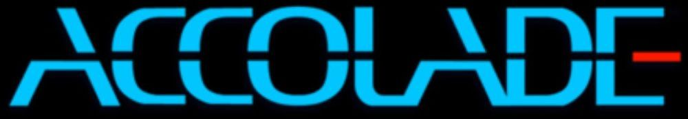

Infogrames North America, Inc. (formerly Accolade, Inc.) was an American video game developer and publisher based in San Jose, California. The company was founded as Accolade in November 1984 by Alan Miller and Bob Whitehead, who had previously co-founded Activision in October 1979.
In April 1999, Accolade was acquired by French video game company Infogrames Entertainment for a combined sum of US$60 million, of which US$50 million in cash and US$10 million in growth capital, and was renamed Infogrames North America, Inc. The company chief executive officer, Jim Barnett, was named head of Infogrames Entertainment's American distribution subsidiary. In December 1999, Infogrames additionally acquired a controlling stake in GT Interactive for a total investment of US$135 million, and renamed it Infogrames, Inc.
On September 11, 2000, Infogrames North America was acquired by Infogrames, Inc. for 28 million market shares transitioned to Infogrames Entertainment, effectively merging Infogrames North America into a newly founded, wholly owned subsidiary of Infogrames, Inc.
Accolade made titles for Amiga, Amstrad CPC, Apple II, Atari 7800, Atari ST, Commodore 64, DOS, Dreamcast, Genesis, MacOS, Playstation, Super Nintendo Entertainment System, Windows, ZX Spectrum
Titles
4th & Inches (1987)
Accolade Comics (1987)
Ace of Aces (1986)
Altered Destiny (1990)
Apollo 18: Mission to the Moon (1987)
Ballz (1994)
Bar Games (1989)
Barkley Shut Up and Jam! (1994)
Barkley Shut Up and Jam! 2 (1995)
Battle Isle 2200 (1994)
Big Air (1998) (PS1)
Blue Angels: Formation Flight Simulation (1989)
Brett Hull Hockey 95 (1994)
Bubble Ghost (1988)
Bubsy 3D: Furbitten Planet (1994)
Bubsy II (1994)
Bubsy in Claws Encounters of the Furred Kind (1993)
Card Sharks (1988)
Combat Cars (1994)
Cyclemania (1994)
Day of the Viper (1989)
Deadlock II: Shrine Wars (1998)
Deadlock: Planetary Conquest (1996)
Don't Go Alone (1989)
Elvira II: The Jaws of Cerberus (1991)
Elvira: Mistress of the Dark (1990)
Eradicator (1996)
Fast Break (1988)
Fight Night (1985)
Grand Prix Circuit (1988)
Grand Prix Unlimited (1992)
Gunboat (1990)
HardBall 4 (1994)
HardBall 5 (1995)
HardBall 6 (1998)
HardBall 6 - 2000 Edition (1999)
Hardball II (1989)
Hardball III (1992)
HardBall! (1985)
Heat Wave (1990)
Hoverforce (1991)
Ishido: The Way of Stones (1990)
Jack Nicklaus 4 (1997)
Jack Nicklaus 5 (1997)
Jack Nicklaus Golf & Course Design: Signature Edition (1992)
Jack Nicklaus' Greatest 18 Holes of Major Championship Golf (1988)
Jack Nicklaus' Unlimited Golf & Course Design (1990)
Killed Until Dead (1986)
Law of the West (1985)
Les Manley in: Lost in L.A. (1991)
Les Manley in: Search for the King (1990)
Mean 18 (1986)
Mike Ditka Power Football (1991)
Mini-Putt (1987)
Pelé II: World Tournament Soccer (1994)
Pelé! (1993)
Pinball Wizard (1987)
Pitball (1996)
PO'ed (1996)
Power at Sea (1988)
Psi-5 Trading Company (1986)
Rack 'Em (1988)
Redline (1999)
Serve & Volley (1988)
Slave Zero (1999)
Snoopy's Game Club (1992)
Speed Racer in My Most Dangerous Adventures (1994)
Speed Racer in The Challenge of Racer X (1993)
Star Control (1990)
Star Control 2 (1992)
Star Control 3 (1996)
Steel Thunder (1988)
Stratego (1990)
Strike Aces (1990)
Test Drive (1987)
Test Drive 4 (1997)
Test Drive 5 (1998)
Test Drive II Car Disk: Musclecars (1989)
Test Drive II Car Disk: The Supercars (1989)
Test Drive II Scenery Disk: California Challenge (1989)
Test Drive II Scenery Disk: European Challenge (1989)
Test Drive II: The Collection (1990)
Test Drive II: The Duel (1989)
Test Drive III: The Passion (1990)
Test Drive: Off-Road (1997)
Test Drive: Off-Road 2 (1998)
Test Drive: Off-Road 3 (1999)
The Cardinal of the Kremlin (1991)
The Cycles: International Grand Prix Racing (1989)
The Dam Busters (1985)
The Game of Harmony (1990)
The Games: Summer Challenge (1992)
The Games: Winter Challenge (1991)
The Third Courier (1989)
The Train: Escape to Normandy (1987)
TKO (1988)
Turrican (1991)
Universal Soldier (1992)
Unnecessary Roughness (1993)
Unnecessary Roughness '95 (1994)
Unnecessary Roughness '96 (1995)
Warp Speed (1992)
Waxworks (1992)
Zero Tolerance (1994)
Zyconix (1992)